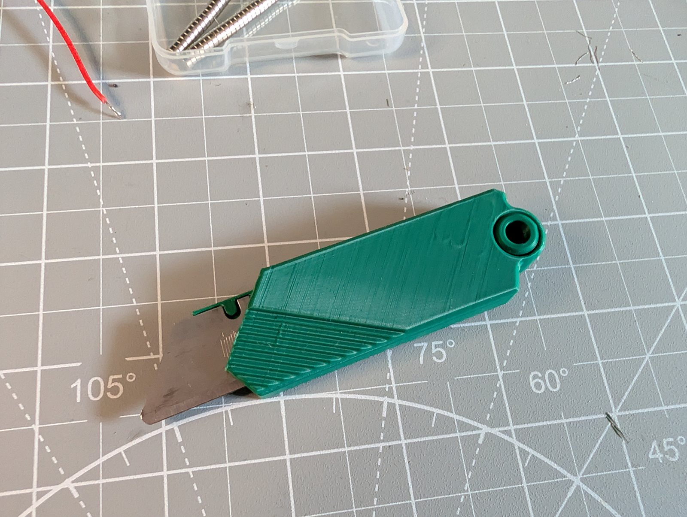
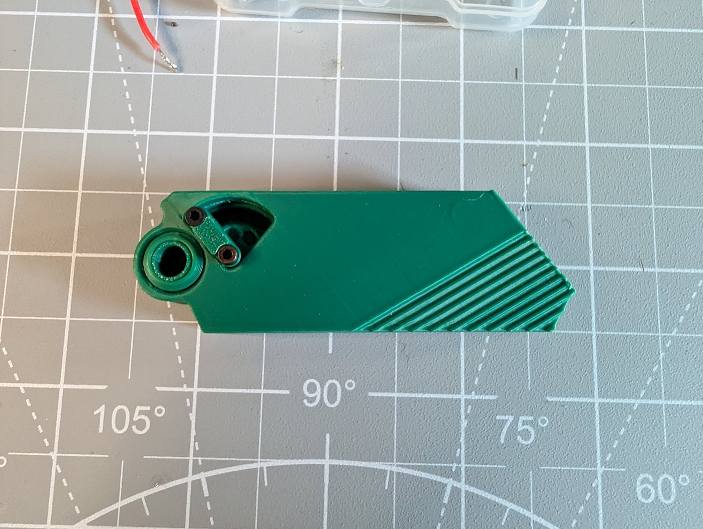
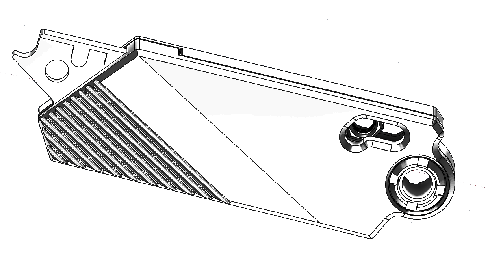
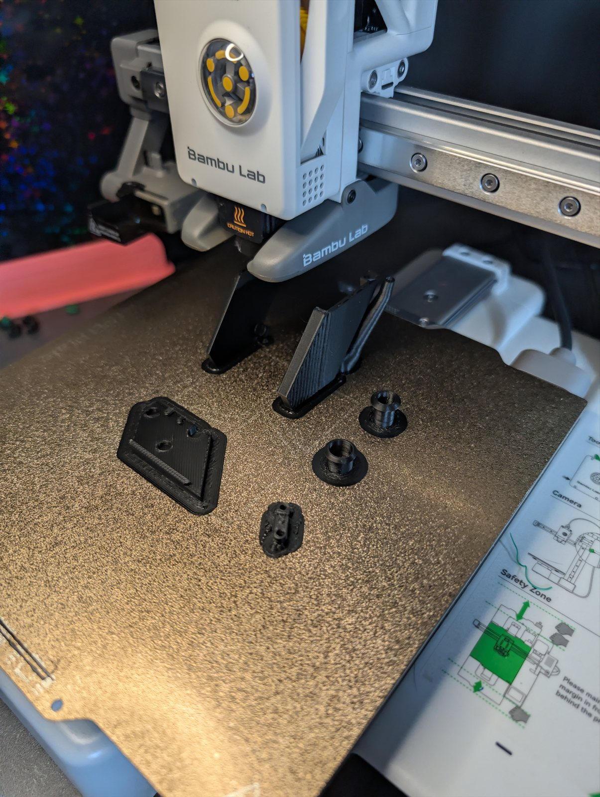
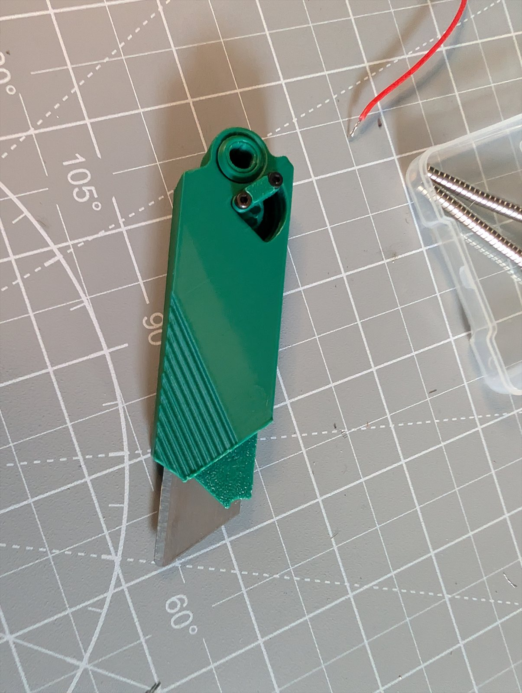
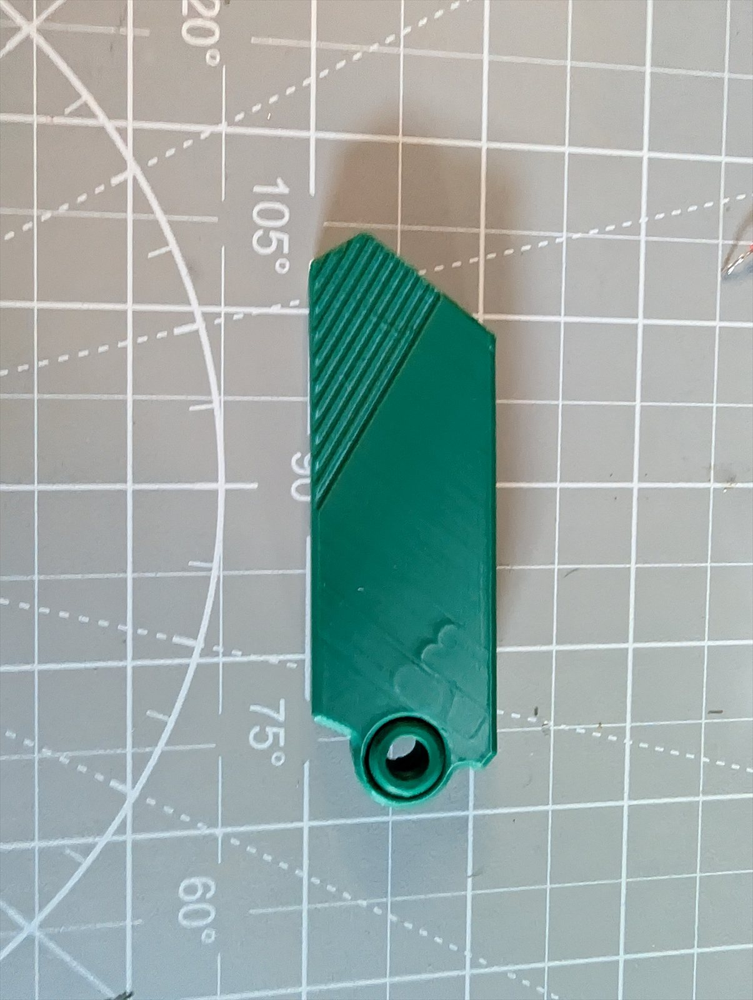

Building a Utility Knife from Scratch
What It Is
A fully 3D printed clone of the Piachi G9 utility knife. The form factor caught my eye as a pure engineering challenge — compact, satisfying mechanism, interesting geometry. I wanted to see if I could build the whole thing from a printer and a handful of screws.

The core is a gear system that pivots on an M3 screw. The gear has three positions with divots for alignment at each stop, and it drives a second M3 screw to control what the blade cover can do.
- Back position — locks the blade cover shut. Safe for your pocket.
- Middle position — opens the case just enough to swap the blade.
- Right position — full open for quick deploy. Flick your wrist and the blade drops out, close the case to lock it in.
Under the hood there's a channel system that physically blocks the cover from opening when the gear is in the back position. Magnets handle blade alignment and help keep everything seated when closed.

Status Updates



Why the gear has three positions
The mechanism separates three jobs: keeping the cover shut, opening it enough to change the blade, and deploying the blade. The gear, channel, screws and magnets work together to give each position a purpose in a compact printed body.
The timeline is a February 2026 snapshot. The working prototype was still being refined, and these notes do not specify a released print profile or hardware list.
What's Next
Tightening up the tolerances on the gear action and doing a final round of test prints. Once I'm happy with the feel, this one goes on Makerworld.
